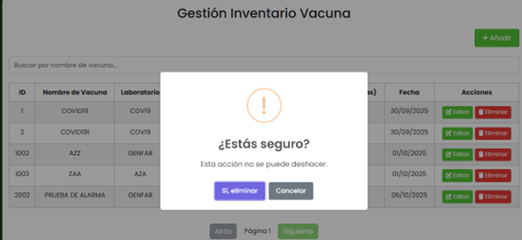
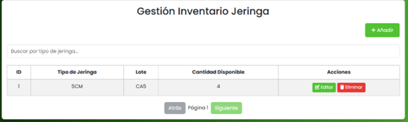
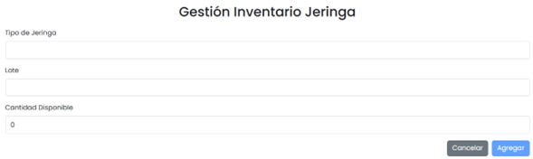
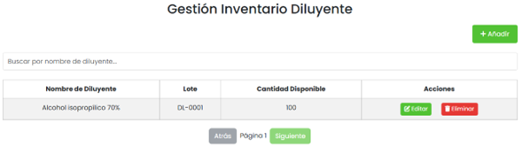
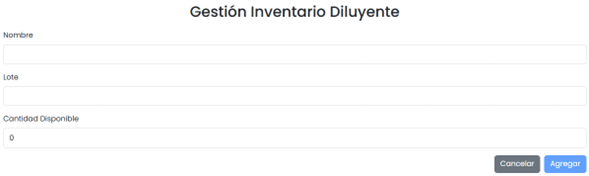
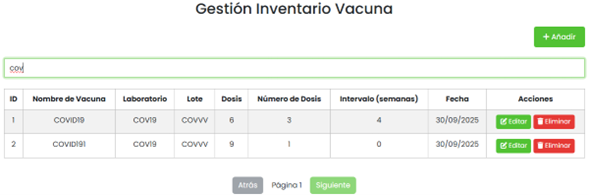

Prólogo
Bienvenido al Manual de Usuario de la Plataforma JAMA. Este documento ha sido creado pensando en usted, el usuario que día a día utilizará este sistema para realizar su trabajo de manera más eficiente y organizada.
JAMA es una plataforma digital diseñada para facilitar la gestión y el seguimiento de la vacunación, especialmente en el ámbito de salud materno-infantil. Su objetivo principal es ayudarle a:
- Llevar un registro claro y ordenado de todos los pacientes.
- Controlar los esquemas de vacunación de cada niño o niña.
- Administrar el inventario de vacunas e insumos médicos.
- Recibir alertas oportunas sobre dosis pendientes o productos próximos a vencer.
- Generar reportes y estadísticas que ayuden en la toma de decisiones.
Este manual está escrito en un lenguaje sencillo y directo. No necesita ser experto en tecnología para entenderlo. Cada sección incluye espacios para que pueda visualizar capturas de pantalla que le ayudarán a reconocer las diferentes partes del sistema.
Importante: Este manual se centra únicamente en cómo usar la plataforma. No incluye instrucciones técnicas de instalación o configuración del sistema, ya que esas tareas las realiza el equipo de tecnología.
Resumen Ejecutivo
La Plataforma JAMA es su herramienta de trabajo diario para la gestión integral de programas de vacunación materno-infantil. El sistema le permite:
✅ Registrar y gestionar pacientes
Capture información completa de madres gestantes y niños: datos personales, antecedentes médicos, condiciones de salud y vincule a cada paciente con su madre o cuidador responsable.
💉 Controlar esquemas de vacunación
Consulte esquemas de vacunación según la edad del paciente, registre dosis aplicadas con información del lote utilizado, y reciba notificaciones automáticas sobre dosis pendientes del mes actual.
📦 Administrar inventario
Mantenga control del stock de vacunas, diluyentes y jeringas. Registre ingresos de lotes y cantidades disponibles para cada tipo de insumo.
📊 Generar reportes y estadísticas
Obtenga análisis de cobertura de vacunación, dosis aplicadas, pacientes registrados y otros indicadores del programa de inmunización.
Características adicionales:
- Asociación de madres y cuidadores: Durante el registro de pacientes menores de edad, puede asociar madres o cuidadores seleccionándolos de listas existentes o registrando nuevos directamente en el formulario.
- Sistema de notificaciones: Alertas sobre vacunas próximas a aplicar en el mes actual para mantener los esquemas al día.
- Control de usuarios por roles: Administradores y enfermeras con permisos específicos según sus funciones.
- Registro de aplicaciones: Cada vacuna aplicada queda registrada con fecha, lote y responsable de la aplicación.
- Búsqueda y filtros: Encuentre rápidamente pacientes por nombre, documento u otros criterios.
En pocas palabras: JAMA centraliza y digitaliza la gestión de vacunación que antes requería múltiples registros en papel, presentándolo todo en una interfaz clara y accesible desde cualquier dispositivo con navegador web.
Objetivo del Sistema
El objetivo principal de JAMA es garantizar que ningún niño o niña se quede sin sus vacunas, mediante un seguimiento ordenado y oportuno de cada dosis que debe recibir según su edad.
Para lograrlo, el sistema:
- Organiza la información: Centraliza datos de pacientes, vacunas aplicadas y próximas citas en un solo lugar.
- Previene errores: Valida datos automáticamente y evita duplicados o inconsistencias.
- Envía recordatorios: Genera alertas cuando una dosis está próxima o atrasada.
Perfiles y Roles
En JAMA, no todos los usuarios pueden hacer las mismas cosas. El sistema asigna roles (también llamados "perfiles") que determinan qué acciones puede realizar cada persona. Esto garantiza la seguridad de la información y evita cambios accidentales.
¿Qué es un rol? Es como un "puesto de trabajo" dentro del sistema. Cada rol tiene permisos específicos.
| Rol | ¿Quién lo usa? | ¿Qué puede hacer? | ¿Qué NO puede hacer? |
|---|---|---|---|
| Administrador | Personal de sistemas o directivos con acceso completo. |
|
Ninguna restricción. Tiene control total del sistema. |
| Enfermera | Personal de salud que atiende pacientes y aplica vacunas. |
|
|
Acceso y Sesión
Pantalla de Inicio de Sesión
Pasos para iniciar sesión:
- Usuario: Escriba el nombre de usuario que le asignaron.
- Contraseña: Digite su contraseña personal. Tip: la contraseña es sensible a mayúsculas y minúsculas, así que escriba con cuidado.
- Haga clic en el botón "Inicia Sesión".
¿Qué pasa si me equivoco? Si ingresa mal su usuario o contraseña, el sistema mostrará un mensaje de error como "Ocurrió un error al intentar iniciar sesión.". Simplemente intente de nuevo con cuidado.
Recuperación de Credenciales
¿Olvidó su contraseña?
Si no recuerda su contraseña o tiene problemas para iniciar sesión, debe comunicarse con el administrador del sistema. El administrador es la única persona autorizada para:
- Restablecer su contraseña y asignarle una nueva contraseña temporal.
- Modificar sus datos de usuario (nombre, rol, contraseña.).
- Verificar el estado de su cuenta y permisos.
Cierre de Sesión
Cuando termine de trabajar, es muy importante que cierre su sesión correctamente, especialmente si usa una computadora compartida.
Para cerrar sesión:
- Busque en la parte superior derecha de la pantalla el botón "Cerrar Sesión".
- Seleccione la opción.
- El sistema lo regresará a la pantalla de inicio de sesión.
Pantalla de Inicio (Dashboard)
La pantalla de Inicio es lo primero que ve al iniciar sesión. Muestra un resumen con estadísticas de inventario e información del sistema. El contenido está dividido en dos columnas.
📊 Columna Izquierda: Tarjeta "Inventario de Vacunas"
Contiene una tarjeta con el título "Inventario de Vacunas" que muestra cuatro indicadores estadísticos en formato de cuadrícula:
| Indicador | Descripción | Interacción |
|---|---|---|
| Total Vacunas Registradas | Muestra el número total de dosis de vacunas registradas en el inventario | Administradores: Clickeable, navega a "Gestionar Vacunas" Enfermeras: Solo lectura |
| Total Jeringas Registradas | Muestra el número total de jeringas registradas en el inventario | Administradores: Clickeable, navega a "Gestionar Jeringas" Enfermeras: Solo lectura |
| Total Diluyentes Registrados | Muestra el número total de diluyentes registrados en el inventario | Administradores: Clickeable, navega a "Gestionar Diluyentes" Enfermeras: Solo lectura |
| Vacunas Aplicadas en el mes | Muestra el número de aplicaciones de vacunas registradas durante el mes actual | Solo lectura para todos los roles |
Nota importante: Los números que ve aquí provienen de las estadísticas del sistema que se calculan automáticamente. Si un número muestra "0", significa que no hay registros de ese tipo en el sistema.
⚡ Columna Derecha: Tarjeta "Accesos Rápidos"
Contiene una tarjeta con el título "Accesos Rápidos" que presenta botones grandes para navegar directamente a las secciones más utilizadas:
Accesos Rápidos para Administradores (4 botones):
| Botón | Destino |
|---|---|
| Gestionar Vacunas | Navega a la gestión de inventario de vacunas |
| Gestión Pacientes | Navega a la gestión de pacientes |
| Gestión Vacunación | Navega al módulo de registro de vacunas |
| Gestionar Usuarios | Navega a la gestión de usuarios del sistema |
Accesos Rápidos para Enfermeras (2 botones):
| Botón | Destino |
|---|---|
| Gestión Pacientes | Navega a la gestión de pacientes |
| Gestión Vacunación | Navega al módulo de registro de vacunas |
Cómo usar los accesos rápidos: Simplemente haga clic en cualquier botón para ir directamente a esa sección del sistema. Son atajos para las funciones más comunes de su rol.
ℹ️ Tarjeta "Información del Sistema"
Debajo de los Accesos Rápidos, en la misma columna derecha, hay una tarjeta con el título "Información del Sistema" que muestra:
| Campo | Descripción |
|---|---|
| Bienvenido/a, [Nombre] | Muestra su nombre de usuario registrado en el sistema. Si no puede obtener el nombre, muestra "Usuario no encontrado". |
| Última conexión | Muestra la fecha (formato DD/MM/AAAA) de su último inicio de sesión. Si no está disponible, muestra "No disponible". |
| Versión | Muestra la versión actual del sistema: 2.0.0 |
| Última actualización | Muestra la fecha de la última actualización del sistema: 03-03-2025 |
| Estado | Muestra el estado del sistema: Activo |
- Administradores:
- Pueden hacer clic en los 3 primeros indicadores de inventario para navegar
- Tienen 4 botones de accesos rápidos
- Enfermeras:
- Los indicadores de inventario son solo informativos (no clickeables)
- Tienen 2 botones de accesos rápidos
Gestión de Pacientes
Esta sección permite registrar y administrar toda la información de los pacientes. Acceda desde el menú superior: "Gestión Pacientes".
📋 Pantalla Principal - Listado de Pacientes
Al entrar a "Gestión Pacientes", verá:
- Título: "Gestión Pacientes"
- Botón "Añadir": En la parte superior izquierda (icono ➕) para registrar un nuevo paciente
- Buscador: Campo de texto con el placeholder "Buscar por Número de Identificación..."
- Tabla de Pacientes: Con scroll vertical.
- Paginación: Botones "Atrás" y "Siguiente" con indicador "Página X"
📊 Columnas de la Tabla
La tabla muestra las siguientes columnas en este orden exacto:
| Columna | Contenido |
|---|---|
| ID | Identificador único del paciente en el sistema |
| Tipo de Identificación | RC, TI, CC, CE, o PA |
| Número de Identificación | Número del documento |
| Primer Nombre | Primer nombre del paciente |
| Primer Apellido | Primer apellido del paciente |
| Fecha de Nacimiento | Formato: DD/MM/AAAA |
| Sexo | MASCULINO o FEMENINO |
| Acciones | Botones "Editar" y "Eliminar" |
🔍 Búsqueda de Pacientes
El sistema permite buscar pacientes escribiendo en el campo de búsqueda:
- Solo busca por Número de Identificación
- Filtra mientras escribe (búsqueda en tiempo real)
- Reinicia la paginación a la página 1 al filtrar
- Muestra 5 pacientes por página
➕ Registrar un Nuevo Paciente
Al hacer clic en el botón "Añadir", se abre un formulario de 7 páginas. El sistema muestra en la parte superior: "Página X de 7".
Página 1 de 7: Información Personal
Título de la sección: "Información Personal"
| Campo | Tipo | Opciones/Formato | Obligatorio |
|---|---|---|---|
| Tipo de identificación | Lista desplegable | RC - Registro Civil, TI - Tarjeta de Identidad, CC - Cédula de Ciudadania, CE - Cédula Extranjera, PA - Pasaporte | ✅ Sí* |
| Número de Identificación | Número | Solo números | ✅ Sí* |
| Primer Nombre | Texto | - | ✅ Sí* |
| Segundo Nombre | Texto | - | ❌ No |
| Primer Apellido | Texto | - | ✅ Sí* |
| Segundo Apellido | Texto | - | ✅ Sí* |
| Fecha de Nacimiento | Fecha | Selector de calendario | ✅ Sí* |
| País de Nacimiento | Texto | - | ✅ Sí* |
| Estatus Migratorio | Lista desplegable | No Aplica, Residente, Legal | ✅ Sí* |
| Sexo | Lista desplegable | MASCULINO, FEMENINO | ✅ Sí* |
| Orientación Sexual | Lista desplegable | HETEROSEXUAL, HOMOSEXUAL, OTRO | ✅ Sí* |
Página 2 de 7: Información de Contacto
Título de la sección: "Información de Contacto"
| Campo | Tipo | Opciones/Formato | Obligatorio |
|---|---|---|---|
| País de Residencia | Texto | - | ✅ Sí* |
| Departamento de Residencia | Texto | - | ✅ Sí* |
| Municipio de Residencia | Texto | - | ✅ Sí* |
| Comuna | Texto | - | ❌ No |
| Dirección | Texto | - | ✅ Sí* |
| Área | Lista desplegable | URBANA, RURAL | ✅ Sí* |
| Correo Electrónico | Formato de correo válido | ✅ Sí* | |
| Celular | Número | Solo números | ✅ Sí* |
| Teléfono Fijo | Número | Solo números | ✅ Sí* |
| Autoriza llamadas | Checkbox | Sí/No | ❌ No |
| Autoriza Envio de Correos Electrónicos | Checkbox | Sí/No | ❌ No |
Página 3 de 7: Información Adicional
Título de la sección: "Información Adicional"
| Campo | Tipo | Opciones/Formato | Obligatorio |
|---|---|---|---|
| Regimen de Afiliacion | Lista desplegable | CONTRIBUTIVO, SUBSIDIADO, POBRE NO ASEGURADO, REGIMEN ESPECIAL, OTRO | ✅ Sí* |
| Aseguradora | Texto | - | ✅ Sí* |
| Pertenencia Étnica | Lista desplegable | INDIGENA, ROM(GITANO), RAIZAL, NEGRO,PALENQUERO,MULATO,AFROCOLOMBIANO, NINGUNO | ✅ Sí* |
Condición Social (Seleccione 1 o más opciones):
- Desplazado (Checkbox)
- Discapacitado (Checkbox)
- Victima del Conflicto Armado (Checkbox)
- Estudia Actualmente (Checkbox)
Página 4 de 7: Antecedentes
Título de la sección: "Antecedentes"
Esta sección permite registrar antecedentes del paciente. Por cada antecedente se solicita:
| Campo | Tipo | Obligatorio |
|---|---|---|
| Fecha Registro | Fecha (selector de calendario, por defecto fecha actual) | ✅ Sí |
| Tipo | Texto | ❌ No |
| Descripción | Área de texto (textarea) | ❌ No |
| Observaciones Especiales | Área de texto (textarea) | ❌ No |
Página 5 de 7: Cuidador o Madre
Título de la sección: "Cuidador o Madre"
Permite asociar una madre o un cuidador al paciente. La pantalla muestra:
- Madre Seleccionada: Campo de texto de solo lectura que muestra el nombre completo de la madre seleccionada o "Ninguna seleccionada"
- Botón "Seleccionar Madre": Abre una tabla con las madres ya registradas en el sistema
- Botón "Quitar Selección Madre": Solo aparece si hay una madre seleccionada
- Cuidador Seleccionado: Campo de texto de solo lectura que muestra el nombre completo del cuidador seleccionado o "Ninguno seleccionado"
- Botón "Seleccionar Cuidador": Abre una tabla con los cuidadores ya registrados en el sistema
- Botón "Quitar Selección Cuidador": Solo aparece si hay un cuidador seleccionado
🔍 Tabla de Selección de Madres
Al hacer clic en "Seleccionar Madre": Se abre una tabla completa con funcionalidad de gestión que incluye:
- Botón "Añadir": Permite registrar una nueva madre directamente desde esta pantalla
- Buscador: Campo "Buscar por Número de Identificación..." para filtrar madres
- Tabla con columnas:
- ID, Tipo de Identificación, Número de Identificación
- Primer Nombre, Segundo Nombre, Primer Apellido, Segundo Apellido
- Acciones: Seleccionar, Editar, Eliminar
- Paginación: 5 madres por página con botones "Atrás" y "Siguiente"
- Botón "Volver al Formulario": Para regresar sin seleccionar
🔍 Tabla de Selección de Cuidadores
Al hacer clic en "Seleccionar Cuidador": Se abre una tabla similar con:
- Botón "Añadir": Registrar nuevo cuidador
- Buscador por Número de Identificación
- Tabla con columnas:
- ID, Tipo de Identificación, Número de Identificación
- Primer Nombre, Segundo Nombre, Primer Apellido, Segundo Apellido
- Parentesco: Relación con el paciente
- Acciones: Seleccionar, Editar, Eliminar
- Paginación y botón "Volver al Formulario"
📝 Formularios de Registro
Formulario de Nueva Madre (desde botón "Añadir"):
| Campo | Tipo | Opciones | Obligatorio |
|---|---|---|---|
| Tipo de identificación | Lista desplegable | RC, TI, CC, CE, PA | ✅ Sí* |
| Número de Identificación | Número | Solo números | ✅ Sí* |
| Primer Nombre | Texto | - | ✅ Sí* |
| Segundo Nombre | Texto | - | ❌ No |
| Primer Apellido | Texto | - | ✅ Sí* |
| Segundo Apellido | Texto | - | ❌ No |
| Correo Electrónico | Formato válido | ✅ Sí* | |
| Teléfono Fijo | Número | Solo números | ✅ Sí* |
| Celular | Número | Solo números | ✅ Sí* |
| Régimen de Afiliación | Lista desplegable | CONTRIBUTIVO, SUBSIDIADO, EXCEPCION Y ESPECIAL E INPEC, OTRO | ✅ Sí* |
Gestión desde las Tablas:
- Seleccionar: Botón azul con ✓ que asocia la madre/cuidador al paciente y regresa al formulario
- Editar: Botón amarillo con ✏️ que abre el formulario de edición
- Eliminar: Botón rojo con 🗑️ que solicita confirmación antes de eliminar
Página 6 de 7: Condición Usuaria
Título de la sección: "Condición Usuaria"
Campos de la condición usuaria:
| Campo | Tipo | Obligatorio |
|---|---|---|
| Condición | Texto | ✅ Sí |
| Gestante | Checkbox | ❌ No |
| Fecha de Última Menstruación | Fecha | ❌ No |
| Semanas de Gestación | Número | ❌ No |
| Fecha Probable de Parto | Fecha | ❌ No |
| Cantidad de Embarazos Previos | Número | ❌ No |
Página 7 de 7: Antecedentes Médicos
Título de la sección: "Antecedentes Médicos"
| Campo | Tipo | Obligatorio |
|---|---|---|
| Contraindicacion Vacunación | Checkbox | ❌ No |
| Detalle Contraindicacion | Texto | ❌ No |
| Reacción Biológicos | Checkbox | ❌ No |
| Detalle Reacción | Texto | ❌ No |
🔘 Navegación del Formulario
En la parte inferior del formulario (excepto cuando está en una tabla de selección) hay botones de navegación centrados:
- Botón "Atrás": Retrocede a la página anterior. No aparece en la página 1.
- Botón "Siguiente": Avanza a la siguiente página. No aparece en la página 7.
- Botón "Guardar": Solo aparece en la página 7. Guarda el paciente completo.
- Botón "Cancelar": Aparece en todas las páginas. Cierra el formulario sin guardar.
✏️ Editar un Paciente
Para editar un paciente existente:
- En la tabla de pacientes, haga clic en el botón "Editar" (icono de lápiz) de la fila del paciente que desea modificar
- Se abrirá el mismo formulario de 7 páginas, pero con los datos actuales del paciente precargados
- El título del formulario cambia a "Editar Paciente"
- Navegue por las páginas y modifique los campos necesarios
- Al llegar a la página 7, haga clic en "Guardar"
🗑️ Eliminar un Paciente
Para eliminar un paciente:
- En la tabla de pacientes, haga clic en el botón "Eliminar" (icono de papelera) de la fila del paciente
- Aparece un mensaje de confirmación con el texto: "¿Estás seguro?" y "Esta acción no se puede deshacer."
- Haga clic en "Sí, eliminar" para confirmar o en "Cancelar" para abortar
- Si confirma, el sistema elimina el paciente y muestra el mensaje: "Eliminado - El paciente ha sido eliminado con éxito."
⚠️ Advertencia: La eliminación de pacientes es permanente y no se puede deshacer. El sistema pedirá confirmación antes de eliminar.
Gestión Vacunación
Esta sección permite consultar los esquemas de vacunación registrados y registrar nuevas vacunas aplicadas. Acceda desde accesos rápidos "Gestión Vacunación".
📋 Pantalla Principal - Listado de Esquemas
Al entrar a "Gestión Vacunación", verá:
- Título: "Gestión Vacunación"
- Botón "Añadir": En la parte superior izquierda (icono ➕) para registrar un nuevo esquema de vacunación
- Buscador: Campo de texto con el placeholder "Buscar por Número de Id del esquema..."
- Tabla de Esquemas: Con scroll vertical.
- Paginación: Botones "Atrás" y "Siguiente" con indicador "Página X" (5 registros por página)
📊 Columnas de la Tabla de Esquemas
La tabla muestra las siguientes columnas en este orden exacto:
| Columna | Contenido |
|---|---|
| Tipo de Identificación | RC, TI, CC, CE, o PA del paciente |
| Numero de Identificación | Número del documento del paciente |
| Tipo de carnet | Tipo de carnet de vacunación |
| Registrado en el PAI | Sí/No - Indica si está registrado en el Programa Ampliado de Inmunizaciones |
| Vacuna Aplicada | Nombre de la vacuna aplicada |
| Fecha de Aplicación | Fecha en formato DD/MM/AAAA o "Sin registro" |
| Fecha próxima de vacuna | Fecha de la próxima dosis en formato DD/MM/AAAA o "Sin registro" |
| Responsable | Nombre del profesional responsable |
| Ver esquema | Botón "Ver" para abrir el detalle del esquema |
🔍 Búsqueda de Esquemas
El sistema permite buscar esquemas escribiendo en el campo de búsqueda:
- Solo busca por Número de Id del esquema
- Filtra mientras escribe (búsqueda en tiempo real)
- Reinicia la paginación a la página 1 al filtrar
- Muestra 5 esquemas por página
👁️ Ver Detalle del Esquema
Al hacer clic en el botón "Ver" (icono de ojo) en cualquier fila, se abre la pantalla del "Esquema de Vacunación" que muestra:
📋 Información General del Esquema
- Logo del sistema: En la parte superior
- Título: "Esquema de Vacunación"
- Fecha: Fecha actual (DD/MM/AAAA)
- Tipo de Carnet: Tipo de carnet registrado
- Responsable: Nombre del profesional responsable
- Registrado en PAI: "Sí" o "No"
- Motivo de ingreso: Motivo registrado en el esquema
👤 Información del Paciente
Al hacer clic en el botón "Ver" (icono de ojo) se muestra una sección con título "Información del Paciente" que incluye:
- Nombre: Primer nombre + Segundo nombre + Primer apellido + Segundo apellido
- Identificación: Tipo de identificación - Número de identificación
💉 Detalles de Vacunación
Se muestra una tabla con título "Detalles de Vacunación" con las siguientes columnas:
| Columna | Contenido |
|---|---|
| Vacuna | Nombre de la vacuna aplicada |
| Dosis | Número de la dosis aplicada |
| Vía | Vía de administración utilizada |
| Sitio | Sitio de aplicación en el cuerpo |
| Fecha próxima dosis | Fecha de la próxima dosis o "Esquema finalizado" |
📝 Observaciones
Si existen observaciones registradas, se muestra una sección con título "Observaciones" con el texto completo.
🖨️ Función de Impresión
En la parte inferior hay un botón "Imprimir" (icono de impresora) que permite imprimir el esquema completo.
➕ Registrar Nuevo Esquema de Vacunación
Al hacer clic en el botón "Añadir" desde la pantalla principal, se abre el "Registro de Vacunación".
🔄 Navegación entre Pantallas
El sistema tiene dos pantallas principales:
- Pantalla 1: "Gestión Vacunación" (listado de esquemas)
- Pantalla 2: "Registro de Vacunación" (formulario para nuevo registro)
- Use el botón "Volver" (icono de flecha izquierda) para regresar al listado
🔍 Búsqueda de Paciente
En la pantalla "Registro de Vacunación", lo primero que debe hacer es buscar el paciente:
- En el campo "Para empezar, digita la cédula de un paciente..." escriba el número de identificación
- El sistema busca automáticamente mientras escribe
- Se muestran mensajes de estado:
- "Buscando paciente...": Mientras realiza la búsqueda
- "Paciente encontrado": Si encuentra el paciente (con fondo verde)
- "Paciente no encontrado": Si no existe (con fondo rojo)
- Si el paciente NO existe, aparece un botón "Registrar" para crear un nuevo paciente
📋 Formulario de Registro (con paciente seleccionado)
Una vez que se encuentra el paciente, se muestra el formulario completo:
| Campo | Tipo | Descripción | Obligatorio |
|---|---|---|---|
| Tipo de Carnet | Texto | Tipo de carnet de vacunación | ✅ Sí* |
| Responsable | Texto (solo lectura) | Se autocompleta con el usuario logueado | ✅ Sí* |
| Registrado en PAI | Checkbox | Indica si está registrado en el Programa Ampliado de Inmunizaciones | ❌ No |
| Motivo de Ingreso | Área de texto | Motivo por el cual se registra el esquema | ❌ No |
| Observaciones | Área de texto | Observaciones adicionales sobre el esquema | ❌ No |
💉 Sección de Detalles de Vacunación
Esta sección permite registrar los detalles específicos de la vacuna aplicada:
| Campo | Tipo | Descripción | Obligatorio |
|---|---|---|---|
| Vacuna | Lista desplegable | Seleccione de las vacunas disponibles en inventario. Muestra: Nombre - Lote (Disponible: X dosis) | ✅ Sí* |
| Jeringa | Lista desplegable | Seleccione de las jeringas disponibles. Muestra: Tipo - Calibre (Disponible: X unidades) | ✅ Sí* |
| Diluyente | Lista desplegable | Opcional. Muestra: Nombre (Disponible: X unidades) | ❌ No |
| Cantidad de Diluyente Utilizada | Número | Solo aparece si selecciona un diluyente. Cantidad mínima: 0 | ❌ No |
📊 Campos Adicionales del Registro
| Campo | Tipo | Descripción | Obligatorio |
|---|---|---|---|
| Numero de la dosis | Texto (solo lectura) | Se autocompleta automáticamente | ✅ Sí* |
| Lote de Vacuna | Texto (solo lectura) | Se autocompleta al seleccionar la vacuna | ✅ Sí* |
| Vía de Administración | Lista desplegable | Opciones: Intramuscular, Subcutánea, Intradérmica, Oral, Nasal | ✅ Sí* |
| Sitio de Aplicación | Lista desplegable | Opciones: Brazo Derecho, Brazo Izquierdo, etc. | ✅ Sí* |
🔄 Comportamiento del Formulario
Selección de Vacuna
Al seleccionar una vacuna de la lista desplegable:
- Se autocompleta el campo "Lote de Vacuna" con el lote de la vacuna seleccionada
- Se actualiza automáticamente el campo "Numero de la dosis"
- Solo se muestran vacunas que tienen stock disponible (dosisDisponibles > 0)
Validaciones del Sistema
- El formulario NO permite guardar si no hay un paciente seleccionado
- Todos los campos marcados con * son obligatorios
- El botón "Guardar Registro" está deshabilitado hasta que complete los campos requeridos
- Si hay errores de validación, se muestra un mensaje: "Por favor complete todos los campos requeridos."
Campos de Solo Lectura
Los siguientes campos se llenan automáticamente y no se pueden editar:
- Responsable: Se llena con el usuario actual del sistema
- Numero de la dosis: Se calcula automáticamente
- Lote de Vacuna: Se toma del inventario de la vacuna seleccionada
💾 Guardar el Registro
Para completar el registro de vacunación:
- Asegúrese de que todos los campos obligatorios estén completos
- Verifique que el paciente correcto esté seleccionado
- Haga clic en "Guardar Registro"
- El sistema procesará el registro y actualizará automáticamente:
- El inventario de vacunas (resta 1 dosis)
- El inventario de jeringas (resta 1 unidad)
- El inventario de diluyentes (resta la cantidad utilizada, si aplica)
- El esquema de vacunación del paciente
- Se mostrará un mensaje de confirmación de que el registro fue exitoso
🔄 Navegación en la Aplicación
Para acceder al módulo de Gestión Vacunación:
Desde el Dashboard:
- Administradores: Clic en "Gestión Vacunación" desde Accesos Rápidos
- Enfermeras: Clic en "Gestión Vacunación" desde Accesos Rápidos
Desde el Menú Superior:
- Administradores: No tienen opción directa en el menú (usan Dashboard)
- Enfermeras: Menú "Registro Vacunas" en la barra superior
Gestión de Inventario de Vacunas e Insumos
El sistema JAMA cuenta con tres módulos separados para administrar el inventario médico: Gestión Inventario Vacuna, Gestión Inventario Jeringa y Gestión Inventario Diluyente. Cada módulo permite agregar, editar, eliminar y visualizar productos con funcionalidades de búsqueda y paginación.
📦 Acceso a los Módulos de Inventario
Para acceder a los módulos de inventario:
- Desde el menú superior, haga clic en "Gestionar Inventario ▼"
- Seleccione el submódulo que desea gestionar:
- Vacunas: Gestión Inventario Vacuna
- Jeringas: Gestión Inventario Jeringa
- Diluyentes: Gestión Inventario Diluyente
🔧 Funcionalidades Comunes de Todos los Módulos
💉 Gestión Inventario Vacuna
Administra las vacunas con: Nombre, Laboratorio, Lote, Dosis Disponibles, Número de Dosis e Intervalo en semanas.
💧 Gestión Inventario Diluyente
Controla los diluyentes con: Nombre de Diluyente, Lote y Cantidad Disponible.
💉 Gestión Inventario Jeringa
Maneja las jeringas con: Tipo de Jeringa, Lote y Cantidad Disponible.
🔧 Funcionalidades Comunes de Todos los Módulos
Cada módulo de inventario cuenta con las siguientes funciones estándar:
- Añadir: Botón "Añadir" con ícono + para crear nuevos registros
- Buscar: Campo de búsqueda para filtrar productos en tiempo real
- Visualizar: Tabla con todos los datos ordenados con scroll vertical
- Editar: Botón "Editar" con ícono de lápiz para modificar registros
- Eliminar: Botón "Eliminar" con ícono de papelera para borrar registros
- Paginación: Botones "Atrás" y "Siguiente" para navegar entre páginas de registros
💉 Gestión Inventario Vacuna
Accesible desde el menú "Gestionar Inventario > Vacunas". Muestra el título "Gestión Inventario Vacuna".
🔍 Búsqueda de Vacunas
El campo de búsqueda tiene el placeholder: "Buscar por nombre de vacuna..." y filtra en tiempo real la tabla de resultados mientras escribe.
📊 Tabla de Vacunas
La tabla muestra las siguientes columnas en este orden exacto:
| Columna | Descripción | Tipo de Dato |
|---|---|---|
| ID | Identificador único automático de la vacuna | Número |
| Nombre de Vacuna | Nombre comercial o técnico de la vacuna | Texto |
| Laboratorio | Fabricante o laboratorio productor | Texto |
| Lote | Número de lote del producto | Texto |
| Dosis | Cantidad de dosis disponibles en inventario | Número |
| Número de Dosis | Número total de dosis del esquema (muestra "-" si no tiene valor) | Número o "-" |
| Intervalo (semanas) | Semanas entre dosis del esquema (muestra "-" si no tiene valor) | Número o "-" |
| Fecha | Fecha de registro en formato DD/MM/AAAA | Fecha |
| Acciones | Botones "Editar" y "Eliminar" | Botones |
➕ Formulario de Añadir/Editar Vacunas
Al hacer clic en "Añadir" o "Editar", se muestra un formulario con los siguientes campos:
| Campo | Tipo | Validaciones |
|---|---|---|
| Nombre | Texto | Campo requerido |
| Laboratorio | Texto | Campo requerido |
| Lote | Texto | Campo requerido |
| Dosis Disponibles | Número | Campo requerido, mayor o igual a 0 |
| Número de Dosis | Número | Campo requerido, mayor o igual a 1 |
| Intervalo de Dosis en semanas | Número | Mayor o igual a 0. Si Número de Dosis = 1, debe ser 0. Si Número de Dosis > 1, debe ser mayor a 0 |
Nota importante sobre validación cruzada:
- Si el Número de Dosis es 1 (dosis única), el Intervalo debe ser 0. El sistema mostrará el mensaje: "Si el número de dosis es 1, el intervalo debe ser 0"
- Si el Número de Dosis es mayor a 1, el Intervalo debe ser mayor a 0. El sistema mostrará el mensaje: "Si el número de dosis es mayor a 1, el intervalo debe ser mayor a 0"
- El campo "Intervalo" incluye la aclaración: "Ponga 0 si es dosis única"
Los botones disponibles en el formulario son:
- Cancelar: Cierra el formulario y regresa a la tabla
- Agregar: Guarda la nueva vacuna (solo en modo creación)
- Actualizar: Guarda los cambios (solo en modo edición)
🗑️ Eliminación de Vacunas
Al hacer clic en "Eliminar", el sistema muestra un mensaje de confirmación:
¿Estás seguro?
Esta acción no se puede deshacer.💉 Gestión Inventario Jeringa
Accesible desde el menú "Gestionar Inventario > Jeringas". Muestra el título "Gestión Inventario Jeringa".
🔍 Búsqueda de Jeringas
El campo de búsqueda tiene el placeholder: "Buscar por tipo de jeringa..."
📊 Tabla de Jeringas
La tabla muestra las siguientes columnas en este orden:
Columna Descripción ID Identificador único automático Tipo de Jeringa Descripción del tipo de jeringa Lote Número de lote del producto Cantidad Disponible Unidades disponibles en inventario Acciones Botones "Editar" y "Eliminar" ➕ Formulario de Jeringas
Campos del formulario:
Campo Validaciones Tipo de Jeringa Campo requerido Lote Campo requerido Cantidad Disponible Campo requerido, mayor o igual a 0 Botones: Cancelar, Agregar (modo crear) o Actualizar (modo editar).
💧 Gestión Inventario Diluyente
Accesible desde el menú "Gestionar Inventario > Diluyentes". Muestra el título "Gestión Inventario Diluyente".
🔍 Búsqueda de Diluyentes
El campo de búsqueda tiene el placeholder: "Buscar por nombre de diluyente..."
📊 Tabla de Diluyentes
La tabla muestra las siguientes columnas (sin columna ID):
Columna Descripción Nombre de Diluyente Nombre del producto diluyente Lote Número de lote del producto Cantidad Disponible Unidades disponibles en inventario Acciones Botones "Editar" y "Eliminar" ➕ Formulario de Diluyentes
Campos del formulario:
Campo Validaciones Nombre Campo requerido Lote Campo requerido Cantidad Disponible Campo requerido, mayor o igual a 0 Botones: Cancelar, Agregar (modo crear) o Actualizar (modo editar).
Para Agregar un Producto:
- Haga clic en el botón "Añadir" con ícono +
- Complete todos los campos requeridos del formulario
- Haga clic en "Agregar" para guardar
- El sistema mostrará un mensaje de éxito: "Vacuna/Jeringa/Diluyente agregada(o) correctamente"
- El nuevo registro aparecerá en la tabla
Para Editar un Producto:
- Localice el producto en la tabla
- Haga clic en el botón "Editar" con ícono de lápiz
- Modifique los campos necesarios
- Haga clic en "Actualizar" para guardar los cambios
- El sistema mostrará un mensaje de éxito: "Vacuna/Jeringa/Diluyente actualizada(o) correctamente"
Para Eliminar un Producto:
- Localice el producto en la tabla
- Haga clic en el botón "Eliminar" con ícono de papelera
- Confirme la acción en el mensaje: "¿Estás seguro? Esta acción no se puede deshacer."
- El sistema mostrará un mensaje de éxito: "La vacuna/jeringa/diluyente ha sido eliminada(o) con éxito."
Para Buscar un Producto:
- Escriba el nombre (o tipo) del producto en el campo de búsqueda
- La tabla se filtrará automáticamente mientras escribe
- Los resultados mostrarán solo los productos que coincidan con su búsqueda
⚙️ Paginación
Cuando hay muchos registros, el sistema los divide en páginas:
- Se muestran 5 elementos por página por defecto
- Use el botón "Atrás" para ir a la página anterior
- Use el botón "Siguiente" para ir a la página siguiente
- El sistema muestra "Página X" indicando la página actual
- Los botones se deshabilitan cuando no hay más páginas disponibles
✅ Validaciones y Mensajes de Error
El sistema valida todos los campos antes de guardar. Si hay errores, mostrará mensajes específicos:
Mensajes de Validación Comunes:
- "El nombre es requerido" - Cuando el campo Nombre está vacío
- "El laboratorio es requerido" - Cuando el campo Laboratorio está vacío (solo vacunas)
- "El lote es requerido" - Cuando el campo Lote está vacío
- "Las dosis disponibles son requeridas y deben ser mayores o iguales a 0" - Para vacunas
- "La cantidad disponible es requerida y debe ser mayor o igual a 0" - Para jeringas/diluyentes
Mensajes de Validación Específicos de Vacunas:
- "El número de dosis es requerido y debe ser mayor o igual a 1"
- "Si el número de dosis es 1, el intervalo debe ser 0"
- "Si el número de dosis es mayor a 1, el intervalo debe ser mayor a 0"
📊 Relación con el Dashboard
Los datos del inventario se reflejan en el Dashboard (pantalla de inicio):
- Total de Dosis: Suma de todas las dosis disponibles de vacunas
- Total de Jeringas: Suma de todas las cantidades disponibles de jeringas
- Total de Diluyentes: Suma de todas las cantidades disponibles de diluyentes
Estos indicadores se actualizan automáticamente cada vez que se agregan, editan o eliminan productos del inventario.
🔗 Integración con Registro de Vacunación
Cuando una enfermera registra una vacunación, el sistema:
- Muestra solo las vacunas con dosis disponibles mayores a 0 en el selector
- Al guardar el registro de vacunación:
- Resta 1 de las Dosis Disponibles de la vacuna seleccionada
- Resta 1 de la Cantidad Disponible de la jeringa seleccionada
- Resta la cantidad utilizada de Cantidad Disponible del diluyente (si aplica)
- Los cambios se reflejan inmediatamente en las tablas de inventario
💡 Buenas Prácticas de Gestión de Inventario:
- ✓ Registre inmediatamente los nuevos lotes cuando reciba suministros
- ✓ Verifique regularmente que las cantidades en el sistema coincidan con el stock físico
- ✓ Use el campo de búsqueda para localizar rápidamente productos específicos
- ✓ No elimine productos que estén siendo utilizados en esquemas de vacunación activos
- ✓ Mantenga actualizado el campo "Número de Dosis" e "Intervalo" para que los esquemas funcionen correctamente
- ✓ Revise el Dashboard regularmente para monitorear los niveles de stock
- ✓ Antes de eliminar, verifique que el producto no esté en uso para evitar errores
🔔 Alertas y Notificaciones
El sistema incluye un módulo de notificaciones que informa sobre pacientes con vacunas pendientes para el mes actual. Esto ayuda al personal de salud a mantenerse al tanto de las dosis próximas a aplicar.
📍 Icono de Notificaciones en la Barra Superior
En la parte superior derecha de la pantalla encontrará un icono de campana (🔔) que muestra:
- Badge rojo con número: Indica la cantidad de pacientes con vacunas pendientes para el mes en curso
- Actualización automática: El sistema se actualiza cada hora automáticamente
- Botón refrescar: Permite actualizar manualmente la lista haciendo clic en el ícono de sincronización (🔄)
📋 Contenido del Panel de Notificaciones
Al hacer clic en el icono de campana, se despliega un menú que muestra:
- Encabezado "Notificaciones" con botón de refrescar
- Botón "Visualizar": Abre la vista completa de gestión de alarmas
- Lista de pacientes: Cada notificación muestra:
- Nombre completo del paciente (en negrita)
- Vacuna pendiente (ejemplo: "Dosis 2 de Neumococo")
- Fecha de aplicación programada en formato dd/MM/yyyy
- Mensaje cuando no hay notificaciones: "No hay notificaciones"
📊 Gestión Alarmas
Al hacer clic en el botón "Visualizar" del panel de notificaciones, se abre una pantalla completa titulada "Gestión Alarmas".
� Botón Actualizar
En la parte superior derecha hay un botón "Actualizar" con ícono de sincronización (🔄) que permite recargar manualmente la lista de alarmas.
🔍 Campo de Búsqueda
Un campo de texto con placeholder "Buscar por número o nombre..." permite filtrar las alarmas en tiempo real mientras se escribe. La búsqueda funciona por:
- Número de identificación del paciente
- Nombre del paciente (búsqueda no sensible a mayúsculas/minúsculas)
📋 Tabla de Alarmas
La tabla muestra las siguientes columnas en este orden:
| Columna | Descripción |
|---|---|
| Tipo de Identificación | Tipo de documento del paciente (ej: Tarjeta Identidad, Cédula, etc.) |
| Número de Identificación | Número del documento de identidad |
| Nombre | Nombre completo del paciente |
| Celular | Número de celular (muestra "-" si no está registrado) |
| Correo | Correo electrónico (muestra "-" si no está registrado) |
| Pendiente | Descripción de la dosis pendiente (ej: "Dosis 2 de Neumococo") |
| Fecha de Aplicación | Fecha programada para aplicar la vacuna (formato dd/MM/yyyy) |
| Ok | Columna de acciones con dos botones:
|
✅ Gestionar una Alarma
Para atender una alarma de vacunación pendiente:
- Localice el paciente en la tabla
- Haga clic en el botón "Gestionar" (ícono ✏️)
- El sistema lo redirigirá automáticamente a la pantalla de "Registro de Vacunación"
- El formulario ya vendrá precargado con:
- Número de identificación del paciente
- Nombre de la vacuna extraída de la descripción (si es posible)
- Complete el resto de información (lote, jeringa, diluyente, etc.) y guarde
- Al registrar la vacuna, la alarma se actualizará automáticamente
🗑️ Eliminar (Marcar como Notificada)
Para marcar una alarma como notificada sin registrar la vacuna:
- Haga clic en el botón "Eliminar" (ícono 🗑️)
- Aparecerá un mensaje de confirmación: "¿Marcar como notificada? Se marcará la alarma como notificada. Esta acción no se puede deshacer."
- Haga clic en "Sí, marcar" para confirmar o "Cancelar" para cancelar
- El sistema mostrará el mensaje: "Hecho - Alarma marcada como notificada"
- La lista se actualizará automáticamente y la alarma desaparecerá
⚙️ Paginación
La tabla muestra 5 alarmas por página. Los controles de paginación aparecen en la parte inferior:
- Botón "Atrás": Va a la página anterior (deshabilitado en la primera página)
- "Página X": Muestra el número de página actual
- Botón "Siguiente": Va a la página siguiente (deshabilitado en la última página)
📱 Acceso según Rol
La pantalla de Gestión Alarmas está disponible para:
- Enfermeras: Acceso desde el menú de enfermera con navbar-enfermera
- Administradores: Acceso desde el menú de administrador con navbar-admin
🔄 Actualización de Datos
- Al abrir la pantalla: Se cargan automáticamente las alarmas del mes actual
- Botón Actualizar: Recarga manualmente los datos desde el servidor
- Después de marcar como notificada: La página se recarga automáticamente
- Indicador de carga: Muestra "Cargando alarmas..." mientras obtiene los datos
- Manejo de errores: Muestra mensaje "No se pudieron cargar las alarmas" si hay un error
- ✓ Use el botón "Gestionar" para registrar directamente la vacunación del paciente
- ✓ Use la búsqueda para encontrar rápidamente un paciente específico
- ✓ Marque como notificada solo si ya contactó al paciente y no aplicará la vacuna inmediatamente
- ✓ Revise todas las páginas si tiene más de 5 alarmas pendientes
- ✓ Use el botón "Actualizar" después de registrar vacunas para ver los cambios
👥 Gestión Usuario
Nota: Esta sección es exclusiva para Administradores. Solo usuarios con rol de administrador pueden acceder a esta funcionalidad.
La gestión de usuarios permite al administrador crear, editar y eliminar cuentas de usuario del sistema. Para acceder, vaya a la página de inicio del administrador y en la sección "Accesos Rápidos", haga clic en el botón "Gestionar Usuarios".
📋 Vista Principal - Listado de Usuarios
La pantalla principal muestra el título "Gestión Usuario" y contiene:
➕ Botón Añadir
Un botón "Añadir" con ícono + en la parte superior permite crear nuevos usuarios.
🔍 Campo de Búsqueda
Un campo de texto con placeholder "Buscar por nombre de usuario..." permite filtrar la tabla en tiempo real. La búsqueda funciona mientras escribe y no es sensible a mayúsculas/minúsculas.
📊 Tabla de Usuarios
La tabla muestra las siguientes columnas en este orden:
| Columna | Descripción |
|---|---|
| ID | Identificador único del usuario en el sistema |
| Nombre de Usuario | Nombre de usuario para iniciar sesión |
| Rol Usuario | Rol asignado (ADMINISTRADOR o ENFERMERA) |
| Acciones | Botones de acción:
|
Nota importante: Los usuarios con rol ADMINISTRADOR no pueden ser eliminados, solo editados.
⚙️ Paginación
La tabla muestra 5 usuarios por página. Los controles de paginación aparecen en la parte inferior:
- Botón "Atrás": Va a la página anterior (deshabilitado en la primera página)
- "Página X": Muestra el número de página actual
- Botón "Siguiente": Va a la página siguiente (deshabilitado en la última página)
➕ Crear Nuevo Usuario
Al hacer clic en el botón "Añadir", se muestra un formulario titulado "Añadir Usuario" con los siguientes campos:
| Campo | Descripción | Validaciones |
|---|---|---|
| Nombre de Usuario | Nombre de usuario para iniciar sesión |
✅ Requerido • Mínimo 4 caracteres • No puede contener espacios en blanco |
| Rol | Selector con opción ENFERMERA |
✅ Requerido • Placeholder: "Seleccione el Rol del Usuario" • Solo permite seleccionar ENFERMERA al crear |
| Contraseña | Contraseña inicial para el usuario |
✅ Requerido • Mínimo 6 caracteres • Campo con opción para mostrar/ocultar |
📝 Mensajes de Validación
El formulario muestra mensajes de error en tiempo real cuando:
- "El campo es requerido" - Si está vacío
- "Mínimo [N] caracteres" - Si no cumple la longitud mínima
- "No se permiten espacios en blanco" - Si el nombre de usuario contiene espacios
✅ Guardar Usuario
Al hacer clic en el botón "Añadir" del formulario:
- Si hay campos sin llenar, muestra un mensaje: "Hay campos sin llenar" con botón "Volver a intentar"
- Si todo está correcto, muestra confirmación: "¿Deseas añadir este usuario?" con opciones "Sí" y "No"
- Al confirmar, muestra mensaje de éxito: "¡Hecho! Usuario añadido con éxito."
- Vuelve a la lista de usuarios actualizada
❌ Cancelar
Al hacer clic en el botón "Cancelar":
- Muestra confirmación: "¿Deseas salir este usuario?" con opciones "Sí" y "No"
- Al confirmar, vuelve a la lista de usuarios sin guardar cambios
✏️ Editar Usuario Existente
Al hacer clic en el botón "Editar" de un usuario, se muestra un formulario titulado "Editar Usuario" con los siguientes campos:
| Campo | Descripción | Estado |
|---|---|---|
| Nombre de Usuario | Nombre de usuario para iniciar sesión |
✅ Requerido • Mínimo 4 caracteres • No puede contener espacios • Puede editarse |
| Rol del Usuario | Rol asignado actualmente |
🔒 Solo lectura (no editable) • Se muestra como campo de texto bloqueado |
| Contraseña | Nueva contraseña (opcional) |
⚪ Opcional • Nota: "Dejar la contraseña en blanco si no es necesario" • Si se deja vacío, mantiene la contraseña actual • Si se llena, mínimo 6 caracteres |
Importante: El rol NO puede cambiarse al editar un usuario. Solo el nombre de usuario y opcionalmente la contraseña.
💾 Guardar Cambios
Al hacer clic en el botón "Guardar" del formulario:
- Muestra confirmación: "¿Deseas guardar los cambios?" con opciones "Sí" y "No"
- Al confirmar, muestra mensaje de éxito: "¡Hecho! Usuario actualizado con éxito."
- Vuelve a la lista de usuarios actualizada
�️ Eliminar Usuario
Para eliminar un usuario (solo disponible para usuarios NO administradores):
- Haga clic en el botón "Eliminar" (ícono 🗑️)
- Aparecerá un mensaje de confirmación: "¿Estás seguro? Esta acción no se puede deshacer."
- Opciones: "Sí, eliminar" o "Cancelar"
- Al confirmar, el sistema muestra: "Eliminado - El paciente ha sido eliminado con éxito."
- La lista de usuarios se actualiza automáticamente
⚠️ Restricción importante: Los usuarios con rol ADMINISTRADOR NO pueden ser eliminados. El botón "Eliminar" no aparece para estos usuarios.
� Actualización de Datos
- Al crear usuario: La lista se recarga automáticamente mostrando el nuevo usuario
- Al editar usuario: Los cambios se reflejan inmediatamente en la lista
- Al eliminar usuario: El usuario desaparece de la lista instantáneamente
- Búsqueda en tiempo real: Los resultados se filtran mientras escribe
💡 Recomendaciones de Contraseñas
Al crear o editar contraseñas, considere:
- ✓ Usar mínimo 6 caracteres (requerido por el sistema)
- ✓ Combinar letras mayúsculas y minúsculas
- ✓ Incluir números y símbolos especiales
- ✓ No usar contraseñas obvias como "123456" o "password"
- ✓ Cambiar contraseñas periódicamente
- ✓ No compartir contraseñas entre usuarios
- ✓ Revise periódicamente el listado de usuarios activos
- ✓ Elimine cuentas de usuarios que ya no trabajan en la institución
- ✓ Use la búsqueda para encontrar rápidamente usuarios específicos
- ✓ Asegúrese de que las contraseñas iniciales sean comunicadas de forma segura
- ✓ Documente los nombres de usuario creados para futuras referencias
- ✓ Solo cree usuarios ENFERMERA cuando sea necesario
📊 Reportes y Estadísticas
El módulo de reportes permite visualizar e imprimir información consolidada de las vacunaciones aplicadas. Todos los reportes son accesibles desde el menú superior "Reportes ▼" del panel de administrador.
📋 Tipos de Reportes Disponibles
El sistema cuenta con 3 tipos de reportes específicos que puede acceder desde el menú desplegable "Reportes" en la barra de navegación:
- Reporte Vacunación - Muestra cantidad de dosis por tipo de vacuna
- Reporte Vacunación Detallado - Muestra información completa de cada aplicación con totales por categoría
- Reporte de Datos Unificados - Presenta estadísticas cruzadas por género
1️⃣ Reporte Vacunación
Este reporte muestra un resumen de las dosis aplicadas agrupadas por tipo de vacuna. Para acceder, vaya a Reportes ▼ > Reporte Vacunación.
📋 Contenido del Reporte
La pantalla muestra el título "Reporte de Vacunación" con el logo del sistema y contiene:
🔍 Filtro por Mes
Un selector desplegable con la etiqueta "Filtrar por mes" que permite:
- "Todos": Muestra todas las vacunas aplicadas sin filtro de fecha
- Meses específicos: Lista en formato "YYYY - Nombre del Mes" (ej: "2025 - Marzo")
- Los meses se generan automáticamente basados en las fechas de aplicación registradas
- Aparecen en orden descendente (más recientes primero)
📊 Tabla de Resultados
La tabla muestra 2 columnas:
| Columna | Descripción |
|---|---|
| Vacuna | Nombre de la vacuna aplicada |
| 🔬 Cantidad de Dosis Aplicadas | Número total de dosis de esa vacuna |
La última fila de la tabla muestra:
- "Total de vacunas aplicadas": Suma total de todas las dosis
🖨️ Botón Imprimir
Al final del reporte hay un botón "🖨️ Imprimir" que:
- Elimina temporalmente la paginación para mostrar todos los datos
- Abre el diálogo de impresión del navegador
- Oculta los elementos no imprimibles (filtros y botones)
- Permite guardar como PDF desde el diálogo de impresión
Nota: La tabla tiene paginación de 5 elementos por página en vista normal, pero al imprimir muestra todos los registros.
2️⃣ Reporte Vacunación Detallado
Este reporte muestra información completa de cada vacuna aplicada con múltiples tablas de totales. Para acceder, vaya a Reportes ▼ > Reporte Vacunación Detallado.
📋 Contenido del Reporte
La pantalla muestra el título "Reporte de Vacunación Detallado" con el logo del sistema.
🔍 Filtro por Mes
Igual que en el reporte anterior, un selector "Filtrar por mes" con opciones "Todos" y meses específicos en formato "YYYY - Nombre del Mes".
📊 Tabla Detallada Individual
La primera tabla muestra cada aplicación de vacuna con 11 columnas:
| Columna | Descripción |
|---|---|
| Vacuna | Nombre de la vacuna |
| N° Dosis | Número de dosis (1ra, 2da, etc.) |
| Edad | Edad del paciente con unidad (ej: "2 meses", "1 año") |
| Régimen | Régimen de afiliación del paciente |
| Etnia | Pertenencia étnica (muestra "NINGUNO" si está vacío) |
| Sexo | Sexo del paciente (FEMENINO/MASCULINO) |
| Desplaz. | En situación de desplazado (Sí/No) |
| Discap. | En situación de discapacidad (Sí/No) |
| Víctima | Víctima del conflicto armado (Sí/No) |
| Estudia | Estudia actualmente (Sí/No) |
| Fecha Aplic. | Fecha de aplicación en formato dd/MM/yyyy |
Nota: Esta tabla tiene paginación de 10 elementos por página.
📈 Tabla: Totales por Vacuna
Segunda tabla con el título "Totales por vacuna" y 2 columnas:
- Vacuna: Nombre de la vacuna
- Cantidad Aplicada: Total de aplicaciones de esa vacuna
- Última fila: "Total de vacunas aplicadas" con la suma total
📈 Tabla: Totales por Vacuna y Régimen de Afiliación
Tercera tabla con el título "Totales por vacuna y régimen de afiliación" y 3 columnas:
- Vacuna: Nombre de la vacuna
- Régimen Afiliación: Tipo de régimen (CONTRIBUTIVO, SUBSIDIADO, POBRE NO ASEGURADO, REGIMEN ESPECIAL, OTRO)
- Cantidad Aplicada: Total por esa combinación
- Última fila: "Total" con la suma general
📈 Tabla: Totales por Vacuna y Pertenencia Étnica
Cuarta tabla con el título "Totales por vacuna y pertenencia étnica" y 3 columnas:
- Vacuna: Nombre de la vacuna
- Pertenencia Étnica: Grupo étnico (INDÍGENA, ROM(GITANO), RAIZAL, PALENQUERO, NEGRO/MULATO/AFROCOLOMBIANO, NINGUNO)
- Cantidad Aplicada: Total por esa combinación
- Última fila: "Total" con la suma general
📈 Tabla: Totales por Vacuna y Condición Social
Quinta tabla con el título "Totales por vacuna y condición social" y 5 columnas:
| Columna | Descripción |
|---|---|
| Vacuna | Nombre de la vacuna |
| Desplazado | Cantidad de personas desplazadas |
| Discapacitado | Cantidad con discapacidad |
| Victima del Conflicto Armado | Cantidad de víctimas |
| Estudia Actualmente | Cantidad que estudia |
La última fila muestra totales por cada condición social.
🖨️ Botón Imprimir
Botón "🖨️ Imprimir" que elimina la paginación y muestra todos los datos para imprimir o guardar como PDF.

3️⃣ Reporte de Datos Unificados
Este reporte presenta estadísticas cruzadas organizadas por género en formato de matriz. Para acceder, vaya a Reportes ▼ > Reporte de Datos Unificados.
📋 Contenido del Reporte
La pantalla muestra el título "Reporte de Datos Unificados" con el logo del sistema.
🔍 Filtro por Mes
Selector "Filtrar por mes" con las mismas opciones que los reportes anteriores.
📊 Estructura de la Tabla Unificada
La tabla tiene una estructura fija con 4 columnas:
- CATEGORÍA: Nombre de la categoría o subcategoría
- FEMENINO: Cantidad de personas de sexo femenino
- MASCULINO: Cantidad de personas de sexo masculino
- TOTAL: Suma de femenino + masculino
📑 Secciones del Reporte
1. Sección GÉNERO
Primera sección con título "GÉNERO" (fila de encabezado de sección):
- FEMENINO: Cantidad de registros femeninos por columna
- MASCULINO: Cantidad de registros masculinos por columna
- TOTAL GENERO: Suma total (fila resaltada)
2. Sección RÉGIMEN
Segunda sección con título "RÉGIMEN":
- CONTRIBUTIVO
- SUBSIDIADO
- POBRE NO ASEGURADO
- REGIMEN ESPECIAL
- OTRO
- TOTAL REGIMEN: Suma de todos los regímenes (fila resaltada)
Nota: Solo se muestran los regímenes que tienen registros (total > 0).
3. Sección ETNIAS
Tercera sección con título "ETNIAS":
- INDÍGENA
- ROM (GITANO)
- RAIZAL
- PALENQUERO
- NEGRO, MULATO, AFROCOLOMBIANO
- NINGUNA PERTENENCIA ÉTNICA
- TOTAL ETNICOS: Suma de todas las etnias (fila resaltada)
Nota: Solo se muestran las etnias con registros (total > 0).
4. Filas Adicionales (Condiciones Sociales)
Después de las secciones principales, se muestran 4 filas adicionales:
- EN SITUACION DE DESPLAZADO: Cantidad de personas desplazadas por género
- EN SITUACION DE DISCAPACIDAD: Cantidad con discapacidad por género
- VICTIMAS DEL CONFLICTO ARMADO: Cantidad de víctimas por género
- ESTUDIA ACTUALMENTE: Cantidad que estudia actualmente por género
🎨 Formato Visual
- Filas de sección: Tienen fondo diferenciado y texto en negrita (GÉNERO, RÉGIMEN, ETNIAS)
- Filas de totales: Resaltadas con estilo especial (TOTAL GENERO, TOTAL REGIMEN, TOTAL ETNICOS)
- Bordes: Tabla con bordes (table-bordered)
🖨️ Botón Imprimir / Exportar PDF
Botón verde con texto "🖨️ Imprimir / Exportar PDF" que abre el diálogo de impresión del navegador.
🔧 Características Comunes de los Reportes
- Logo del sistema: Todos los reportes muestran el logo en la parte superior
- Filtro por mes: Los 3 reportes permiten filtrar por mes o ver todos los datos
- Impresión optimizada: Los elementos de interfaz (filtros, botones) se ocultan al imprimir
- Formato de fecha: Las fechas se muestran en formato dd/MM/yyyy
- Totales automáticos: Todos los reportes calculan y muestran totales
- Ordenamiento: Los datos se ordenan alfabéticamente por vacuna
💾 Guardar Reportes como PDF
Todos los reportes se pueden guardar como PDF siguiendo estos pasos:
- Haga clic en el botón "Imprimir" del reporte
- En el diálogo de impresión del navegador, seleccione "Guardar como PDF" como destino
- Haga clic en "Guardar"
- Elija la ubicación y nombre del archivo
📅 Interpretación de Filtros por Mes
- "Todos": Muestra todo el historial de vacunaciones sin límite de fecha
- Mes específico: Filtra solo las aplicaciones realizadas en ese mes calendario
- Meses disponibles: Se generan automáticamente basados en las fechas reales de aplicación
- Orden: Los meses aparecen del más reciente al más antiguo
- ✓ Use el Reporte Vacunación para estadísticas generales rápidas
- ✓ Use el Reporte Vacunación Detallado para análisis completos con múltiples dimensiones
- ✓ Use el Reporte de Datos Unificados para análisis comparativos por género
- ✓ Filtre por mes para reportes mensuales o use "Todos" para reportes anuales
- ✓ Exporte a PDF para compartir con directivos o para archivo
- ✓ Los totales por condición social ayudan a identificar poblaciones vulnerables
🔍 Búsqueda y Filtrado
El sistema JAMA incluye funcionalidades de búsqueda en tiempo real en las diferentes secciones para encontrar rápidamente la información que necesita.
🔎 Búsqueda Simple en Tiempo Real
Cada módulo del sistema cuenta con un campo de búsqueda específico en la parte superior del listado. La búsqueda filtra los resultados automáticamente mientras escribe, sin necesidad de presionar ningún botón.
📋 Campos de Búsqueda por Módulo
Cada sección tiene su propio campo de búsqueda optimizado:
| Módulo | Placeholder del Campo | Busca por |
|---|---|---|
| Gestión Pacientes | "Buscar por Número de Identificación..." | Número de documento del paciente |
| Registro Vacunación | "Buscar por Número de Id del esquema..." | ID del esquema de vacunación |
| Gestión Alarmas | "Buscar por número o nombre..." | Número de identificación o nombre del paciente |
| Inventario Vacunas | "Buscar por nombre de vacuna..." | Nombre de la vacuna |
| Inventario Jeringas | "Buscar por tipo de jeringa..." | Tipo de jeringa |
| Inventario Diluyentes | "Buscar por nombre de diluyente..." | Nombre del diluyente |
| Gestión Usuario | "Buscar por nombre de usuario..." | Nombre de usuario (no sensible a mayúsculas/minúsculas) |
| Tabla Madres | "Buscar por Número de Identificación..." | Número de documento de la madre |
| Tabla Cuidadores | "Buscar por Número de Identificación..." | Número de documento del cuidador |
✨ Características de la Búsqueda
- Filtrado en tiempo real: Los resultados se actualizan mientras escribe
- Sin botón "Buscar": No necesita presionar Enter ni hacer clic en ningún botón
- Búsqueda parcial: No necesita escribir el dato completo, con algunas letras es suficiente
- Sin distinción de mayúsculas: En la mayoría de campos, no importa si escribe en mayúsculas o minúsculas
- Actualización inmediata: Al borrar el campo de búsqueda, vuelven a aparecer todos los registros
💡 Ejemplo de Uso
Para buscar un paciente:
- Vaya a "Gestión Pacientes"
- En el campo "Buscar por Número de Identificación..."
- Empiece a escribir el número de documento (ej: "1234")
- La tabla se filtra automáticamente mostrando solo los pacientes con ese número
- Continúe escribiendo para refinar la búsqueda
- Para ver todos nuevamente, borre el contenido del campo
📄 Paginación
Cuando hay muchos registros, el sistema los divide en páginas para facilitar la navegación:
🔢 Elementos por Página
Cada módulo tiene su propia configuración de paginación:
- Gestión Pacientes: 5 registros por página
- Registro Vacunación: 5 esquemas por página
- Gestión Alarmas: 5 alarmas por página
- Inventario (Vacunas, Jeringas, Diluyentes): 5 elementos por página
- Gestión Usuario: 5 usuarios por página
- Reporte Vacunación: 5 vacunas por página (10 al imprimir todos)
- Reporte Detallado: 10 registros por página
🎮 Controles de Paginación
En la parte inferior de cada tabla encontrará:
- Botón "Atrás": Va a la página anterior (deshabilitado en la primera página)
- "Página X": Muestra el número de página actual
- Botón "Siguiente": Va a la página siguiente (deshabilitado en la última página)
🔍 Filtros Especiales
📅 Filtro por Mes (Reportes)
Los 3 tipos de reportes incluyen un selector desplegable para filtrar por mes:
- "Todos": Muestra todo el historial sin límite de fecha
- Meses específicos: En formato "YYYY - Nombre del Mes" (ej: "2025 - Marzo")
- Los meses disponibles se generan automáticamente basados en las fechas reales de aplicación
- Aparecen ordenados del más reciente al más antiguo
🔔 Filtro en Alertas de Enfermera
El módulo de alertas para enfermeras tiene 3 selectores de filtro:
- Tipo: Filtra por tipo de alerta
- Estado: Filtra por estado de la alerta
- Prioridad: Filtra por nivel de prioridad
⚠️ Limitaciones y Consideraciones
- Un criterio de búsqueda a la vez: Cada campo de búsqueda filtra por un solo criterio específico
- No hay búsqueda global: Debe buscar dentro del módulo correspondiente
- Sin filtros avanzados combinados: El sistema no permite combinar múltiples criterios de búsqueda simultáneamente
- Búsqueda exacta por número: En campos numéricos, busca coincidencias exactas o que contengan los dígitos escritos
- Resultados paginados: Los resultados filtrados también se paginan si superan el límite por página
- ✓ Si no encuentra un registro, verifique que está en el módulo correcto
- ✓ Asegúrese de estar buscando por el campo correcto (ej: número de documento, no nombre)
- ✓ Borre el campo de búsqueda para ver todos los registros nuevamente
- ✓ Use la búsqueda antes de navegar por páginas para reducir resultados
- ✓ En búsquedas por número, escriba los dígitos sin puntos ni espacios
♿ Accesibilidad y Usabilidad
JAMA está diseñado con características que facilitan su uso y mejoran la experiencia del usuario.
🎨 Diseño Responsivo
El sistema se adapta automáticamente a diferentes tamaños de pantalla:
- Computadoras de escritorio: Vista completa con todas las funcionalidades
- Tablets: Diseño adaptado con navegación optimizada
- Menú responsive: En pantallas pequeñas, el menú de navegación se colapsa en un botón hamburguesa
📱 Interfaz Intuitiva
Elementos de diseño que facilitan el uso:
🎯 Iconos Descriptivos
El sistema utiliza iconos de Font Awesome para identificar acciones:
- ➕ (plus): Añadir nuevo registro
- ✏️ (pen-to-square): Editar registro existente
- 🗑️ (trash): Eliminar registro
- 👁️ (eye): Ver/Visualizar detalles
- 🔔 (bell): Notificaciones y alarmas
- 🖨️ (print): Imprimir o exportar
- 🔄 (arrows-rotate): Actualizar o refrescar
- 🏠 (house): Inicio
- 🚪 (sign-out-alt): Cerrar sesión
🎨 Código de Colores
Botones con colores que indican su función:
- Botones principales: Color personalizado del tema (btn-custom)
- Botones de eliminar: Rojo (btn-custom-delete)
- Botones secundarios: Gris (btn-secondary)
- Botones de éxito: Verde (btn-success)
💬 Mensajes Claros
El sistema utiliza SweetAlert2 para mostrar mensajes informativos:
- Confirmaciones: "¿Deseas añadir este usuario?", "¿Estás seguro?"
- Mensajes de éxito: "¡Hecho! Usuario añadido con éxito."
- Mensajes de error: "Hay campos sin llenar", "Error al cargar datos"
- Opciones claras: "Sí" / "No", "Aceptar" / "Cancelar"
✅ Validación en Tiempo Real
Los formularios validan los datos mientras el usuario escribe:
🔴 Indicadores Visuales de Error
- Borde rojo: Campo con error (clase 'is-invalid')
- Mensaje bajo el campo: Descripción del error específico
- Campo requerido: Marcado con asterisco o etiqueta "required-field"
📝 Validaciones Implementadas
| Validación | Mensaje | Ejemplo de Uso |
|---|---|---|
| Campo requerido | "El campo es requerido" | Todos los campos obligatorios |
| Longitud mínima | "Mínimo [N] caracteres" | Nombre de usuario (4 chars), Contraseña (6 chars) |
| Longitud máxima | "La longitud máxima es [N]" | Campos con límite de caracteres |
| Sin espacios | "No se permiten espacios en blanco" | Nombre de usuario |
| Formato inválido | "El formato no es válido" | Emails, números, fechas |
🖱️ Interactividad
Elementos interactivos que mejoran la experiencia:
🔽 Menús Desplegables
- Reportes ▼: Muestra/oculta submenu con 3 tipos de reportes
- Gestionar Inventario ▼: Muestra opciones de Vacunas, Jeringas, Diluyentes
- Flecha animada: Rota cuando el menú está abierto (clase 'rotate')
🔔 Badge de Notificaciones
- Círculo rojo sobre el ícono de campana
- Muestra el número de alarmas pendientes
- Actualizado en tiempo real
- Solo visible cuando hay alarmas (> 0)
👁️ Mostrar/Ocultar Contraseña
- Ícono de ojo en campos de contraseña
- Permite ver temporalmente la contraseña escrita
- Mejora la usabilidad al evitar errores de tipeo
📄 Tablas con Scroll
Las tablas largas incluyen scroll vertical:
- Altura máxima: 400px en la mayoría de tablas
- Encabezados fijos: Los títulos de columna permanecen visibles al hacer scroll
- Clase: "table-responsive" con "overflow-y: auto"
🖨️ Optimización para Impresión
Los reportes están optimizados para imprimir:
- Clase "no-print": Oculta filtros y botones al imprimir
- Muestra todos los datos: Elimina la paginación temporalmente
- Logo visible: Mantiene el logo del sistema en la versión impresa
- Formato limpio: Solo muestra la información esencial
⚡ Rendimiento
Características que optimizan el rendimiento:
- Paginación: Carga solo 5-10 registros a la vez en lugar de todos
- Filtrado local: Las búsquedas filtran en el cliente sin consultar el servidor constantemente
- Timeouts controlados: Delays de 100-500ms para operaciones como impresión
🎯 Accesos Rápidos
Panel de inicio del administrador con 4 botones de acceso directo:
- 🔬 Gestionar Vacunas
- 👤 Gestión Pacientes
- 💉 Gestión Vacunación
- 👥 Gestionar Usuarios
📊 Información Contextual
El sistema muestra información útil en cada sección:
- Página actual: "Página X" en los controles de paginación
- Totales: "Total de vacunas aplicadas: XX" en reportes
- Estado de sesión: Nombre de usuario visible en el panel
- Versión del sistema: "Versión: 2.0.0" en panel de administrador
- ✓ Use el navegador actualizado (Chrome, Firefox, Edge) para mejor experiencia
- ✓ Mantenga la ventana en tamaño completo para ver toda la información
- ✓ Espere a que los mensajes de confirmación terminen antes de continuar
- ✓ Observe los mensajes de error en formularios para saber qué corregir
- ✓ Use los iconos como guía visual para las acciones disponibles
🔐 Buenas Prácticas de Seguridad
La información en JAMA es confidencial y sensible. Proteger los datos de los pacientes es responsabilidad de todos los usuarios del sistema.
🔑 Gestión de Credenciales
📋 Requisitos de Contraseña del Sistema
El sistema implementa validaciones de contraseña:
- Longitud mínima: 6 caracteres (validación requerida)
- Campo obligatorio: No se puede dejar vacío al crear usuario
- Opcional al editar: Si deja el campo vacío, mantiene la contraseña actual
✅ Recomendaciones de Contraseñas Seguras
Aunque el sistema requiere mínimo 6 caracteres, se recomienda:
- ✓ Usar al menos 8 caracteres
- ✓ Combinar letras mayúsculas y minúsculas
- ✓ Incluir números (0-9)
- ✓ Incluir símbolos especiales (@, #, $, %, etc.)
- ✓ No usar contraseñas obvias como "123456", "password" o su nombre
- ✓ No usar la misma contraseña en otros sistemas
🚫 Validación de Nombre de Usuario
El sistema valida que el nombre de usuario:
- Mínimo 4 caracteres: Validación obligatoria
- Sin espacios en blanco: Validador personalizado (noSpacesValidator)
- Campo obligatorio: No puede quedar vacío
🔐 Sistema de Autenticación
🎫 Token JWT (JSON Web Token)
El sistema utiliza tokens JWT para autenticación segura:
- Token almacenado: Se guarda en localStorage del navegador
- Información del token: Contiene idUsuario, nombreUsuario (sub), rolUsuario
- Fecha de inicio: Se registra la última conexión (lastLogin)
- Decodificación automática: El sistema valida y decodifica el token en cada solicitud
🔒 Protección de Roles
El sistema implementa control de acceso basado en roles:
- ADMINISTRADOR: Acceso completo a todos los módulos
- ENFERMERA: Acceso limitado según permisos asignados
- Validación en cada página: Guards de Angular verifican el rol antes de permitir acceso
🖥️ Seguridad de Sesión
🔓 Cerrar Sesión Correctamente
Siempre use el botón "🚪 Cerrar Sesión" que:
- Elimina el token del localStorage
- Elimina la fecha de última conexión
- Redirige a la pantalla de login
- Limpia todos los datos de la sesión
⚠️ Nunca Cierre el Navegador sin Cerrar Sesión
- Token persistente: El token permanece en localStorage incluso si cierra el navegador
- Riesgo en computadoras compartidas: Otra persona podría abrir el navegador y acceder a su sesión
- Siempre cierre sesión: Especialmente en computadoras públicas o compartidas
🔒 Bloquee su Computadora
Si se ausenta temporalmente:
- Windows: Presione
Win + L - Mac: Presione
Ctrl + Cmd + Q - Linux: Presione
Ctrl + Alt + L(varía según distribución)
🗂️ Protección de Datos
📊 Manejo de Reportes
- Reportes con datos sensibles: Los 3 tipos de reportes contienen información personal
- Al imprimir/exportar PDF: Guarde los archivos en ubicaciones seguras
- Elimine cuando no necesite: No acumule archivos con datos sensibles en su computadora
- No comparta por medios inseguros: Use canales oficiales para compartir información
🚫 Restricciones del Sistema
El sistema implementa restricciones de seguridad:
- No se puede eliminar ADMINISTRADOR: Los usuarios con rol ADMINISTRADOR están protegidos contra eliminación
- No se puede cambiar rol: El campo rol es readonly en edición para prevenir escalación de privilegios
- Solo crear ENFERMERA: Al crear usuarios, solo se permite rol ENFERMERA (no se puede crear más administradores)
🌐 Seguridad del Navegador
✅ Navegadores Recomendados
- Google Chrome (versión actualizada)
- Mozilla Firefox (versión actualizada)
- Microsoft Edge (versión actualizada)
- Safari (versión actualizada, para Mac)
⚠️ Prácticas de Seguridad en el Navegador
- Mantenga el navegador actualizado: Las actualizaciones incluyen parches de seguridad
- No guarde contraseñas en el navegador: Use un gestor de contraseñas externo si es necesario
- Borre el caché periódicamente: Especialmente en computadoras compartidas
- No use modo incógnito: El sistema requiere localStorage que no persiste en modo incógnito
📱 Acceso desde Diferentes Dispositivos
- Una sesión a la vez: Si inicia sesión en otro dispositivo, cierre la sesión anterior
- No comparta dispositivos: Cada usuario debe usar su propio dispositivo cuando sea posible
- Dispositivos móviles: Tenga las mismas precauciones de seguridad
🚨 Detección de Problemas de Seguridad
Reporte inmediatamente si detecta:
- ✗ Actividad en su cuenta que usted no realizó
- ✗ Cambios en sus datos que no autorizó
- ✗ Intentos de acceso fallidos repetidos
- ✗ Mensajes sospechosos solicitando credenciales
- ✗ Comportamiento extraño del sistema
- ✗ Alertas de seguridad del navegador
📋 Responsabilidades del Usuario
Como usuario del sistema, usted es responsable de:
- ✓ Mantener la confidencialidad de su contraseña
- ✓ Cerrar sesión al terminar de usar el sistema
- ✓ No compartir su cuenta con otras personas
- ✓ Reportar cualquier incidente de seguridad
- ✓ Usar el sistema solo para fines laborales autorizados
- ✓ No acceder a información que no necesita para su trabajo
- ✓ Proteger los datos de los pacientes según la ley
⚖️ Cumplimiento Normativo
El manejo de datos en JAMA debe cumplir con:
- Ley de Habeas Data (Colombia): Protección de datos personales
- Secreto profesional médico: Información confidencial de pacientes
- Políticas institucionales: Reglamentos de su centro de salud
- ✓ La seguridad es responsabilidad de TODOS
- ✓ Una contraseña comprometida pone en riesgo a todos los pacientes
- ✓ Cierre sesión SIEMPRE que termine de usar el sistema
- ✓ No comparta sus credenciales bajo ninguna circunstancia
- ✓ Reporte cualquier actividad sospechosa inmediatamente
- ✓ Los datos de los pacientes son confidenciales y están protegidos por ley